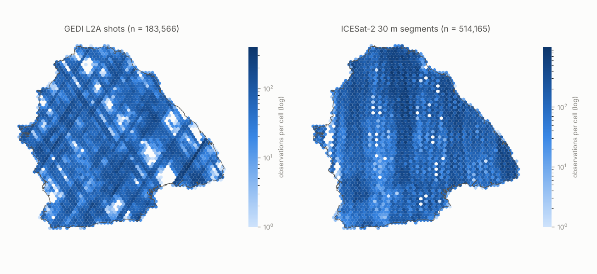
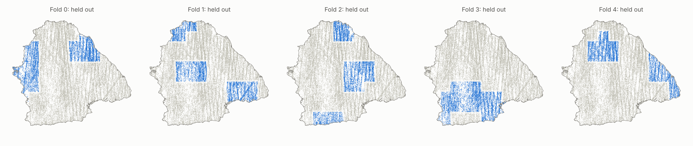

Annual canopy height for the Azuero Peninsula, Panama, 2017–2025
An annual, gridded 20 m canopy-height product with per-pixel uncertainty for the Azuero Peninsula (7534 km²). Spaceborne lidar from GEDI and ICESat-2 supplies the labels: 697,731 quality-screened observations, harmonized to the GEDI rh98 scale. The AlphaEarth Foundations annual satellite embeddings, plus supporting predictors, map those labels across the peninsula. Accuracy comes from cross-validation that holds out whole contiguous regions and whole years. It is a lower bound for the final product, which uses all the data.
Final configuration: Final: AlphaEarth + time + terrain + observation covariates (20 m). Built from commit-tracked results in
results/; code at github.com/ashiklom/azuero-canopy-height.
Explore the product
Pick a year and a layer. Click anywhere to read the 20 m pixel values, which are read directly from the product's Cloud-Optimized GeoTIFFs. Change is the smoothed height minus the previous year's smoothed height. Uncertainty is the 1 SD of a GEDI-equivalent measurement at the cell (conformally calibrated).
Overlays are 100 m averages for display. The downloadable rasters are at full resolution.
Data
Lidar labels
GEDI L2A v002 (2019–2023, then from 2024 after the ISS storage period).
Shots are retrieved with SlideRule Earth
(gedi02ap) with the full relative-height profile and quality fields. We keep
shots with quality_flag = 1, degrade_flag = 0, the surface flag
set, sensitivity ≥ 0.95 (≥ 0.98 for coverage beams), at least one detected mode,
agreement with the reference DEM within 50 m, and urban fraction below 50 %. The
target is rh98.
ICESat-2 (from October 2018). Instead of the standard 100 m ATL08
segments, SlideRule's atl03x endpoint runs the PhoREAL canopy algorithm on
custom 30 m along-track extents (len = res = 30 m). This
matches the analysis grid. It uses the ATL08 photon classes (ground, canopy,
top-of-canopy) with a 1 m vertical bin, relative heights, and the extent centre for
geolocation. We require at least 10 photons including at least 3 ground photons, no
processing flags and no water. The 98th-percentile canopy relief (h_canopy)
is the target. Comparisons with GEDI showed that the ATL08 multiple-scattering (cloud)
flag does not degrade agreement, so it is not used as a filter.
Observations far from the robust local consensus are flagged and excluded from training. The test is |h − median| > max(3·MAD, 10 m) among same-sensor, same-year neighbours within 100 m.

Quality screening
| sensor | step | observations remaining |
|---|---|---|
| gedi | raw | 1705186 |
| gedi | quality_flag | 538869 |
| gedi | degrade_flag | 378618 |
| gedi | surface_flag | 378618 |
| gedi | sensitivity | 188668 |
| gedi | detected_modes | 188668 |
| gedi | dem_agreement | 186692 |
| gedi | urban | 186349 |
| gedi | height_range | 186224 |
| icesat2 | raw | 937221 |
| icesat2 | pflags | 850694 |
| icesat2 | water | 840294 |
| icesat2 | photons | 747823 |
| icesat2 | ground_photons | 530998 |
| icesat2 | cloud_msw | 530998 |
| icesat2 | height_range | 530501 |
| gedi | years_in_range | 186224 |
| gedi | inside_aoi | 183956 |
| gedi | not_local_outlier | 183566 |
| icesat2 | years_in_range | 530501 |
| icesat2 | inside_aoi | 523881 |
| icesat2 | not_local_outlier | 514165 |
Predictors
- AlphaEarth Foundations annual embeddings (Google / Google DeepMind,
CC-BY 4.0). These are 64-dimensional unit vectors per 10 m pixel and year, 2017–2025,
summarizing Sentinel-1/2, Landsat and other inputs. We read the
Source Cooperative copy directly. The
copy is stored bottom-up, so rows are flipped on read. The
smallprofile reads the 20 m overview level. Other grids are derived by exact area-weighted averaging. Earth Engine was not available. - Context embedding: the AlphaEarth vector averaged over a ~90 m neighbourhood. It adds spatial context and absorbs GEDI's ~10 m geolocation error.
- Terrain (Copernicus GLO-30): elevation, slope, northness/eastness, topographic position at 150 m and 1 km, and 1 km relief.
- Harmonized Landsat Sentinel-2 (HLS v2.0). Fmask-screened monthly medians of red, NIR, SWIR1, SWIR2, NDVI, NBR and NDMI are summarized per year (p10/p50/p90, dry-season medians). The monthly composites also feed the stability screening and the state-space model.
- Sentinel-1 RTC γ⁰ VV/VH monthly medians and annual summaries.
NASA's OPERA RTC-S1 was the first choice, but ASF downloads were refused for the
account used here. Data come from the Microsoft Planetary Computer
sentinel-1-rtccollection instead. - AVIRIS-3 imaging spectroscopy from NASA's AVUELO campaign (8 and 11 February 2025): 94 orthorectified L2A reflectance scenes at 3.4 m over Azuero. They are aggregated to the grid, binned to 30 nm, and reduced to 10 principal components plus NDVI, NDRE, PRI, NDWI and the cellulose absorption index. They are tested as an experiment because they cover only part of the peninsula on one date.
What the final model uses. Cross-validation (below) settled on the following features:
- the AlphaEarth embedding of the observation's year;
- the observation's decimal year;
- terrain;
- three observation covariates: ICESat-2 vs GEDI, night vs day, and strong vs weak beam.
The map is predicted on a single measurement standard: a GEDI power-beam shot at night, mid-year. Context embeddings, HLS, Sentinel-1 and AVIRIS-3 features did not improve held-out accuracy. They are reported as ablations. HLS and Sentinel-1 still feed the stability screening and the version-2 state-space model.
Evaluated but not used
- LVIS and other airborne lidar: none over Azuero in NASA Earthdata.
- UAVSAR: two L-band lines (Cerro Hoya, May 2026), after the product period.
- EMIT: 109 granules, mostly cloudy, at 60 m. Not used because AVIRIS-3 covers the same need at much finer resolution.
- In-situ plots: no openly available Azuero plot inventory with tree heights was found. The PRORENA Los Santos plantation trial and STRI plots are described in publications, but no data deposits were found.
- Reference maps are used only for comparison: Global Airborne Observatory 2012 1 ha canopy height (airborne lidar + upscaling), ETH 2020 10 m (Lang et al.), and the Meta/WRI 1 m CHM (Tolan et al.). Hansen GFC v1.13 loss years are used for stability screening.
Methods
Area and grids
The area of interest is the union of the Herrera and Los Santos provinces with the
Mariato district and mainland Montijo (Veraguas), from geoBoundaries ADM2, without
islands. All analysis grids are in UTM 17N, with pixel edges on integer multiples of
their resolution. hls30 (30 m) coincides with the HLS/MGRS grid, and
aef20 (20 m) with AlphaEarth's native pixel edges at its first overview.
A native 10 m grid (aef10) is configured for the full profile.
Sensor harmonization with stability screening
GEDI and ICESat-2 measure canopy height differently: full-waveform rh98 versus photon-counting relief. ICESat-2 heights are mapped onto the GEDI scale using near-coincident pairs (within 20 m and 1 year). A pair is only useful for calibration if the canopy did not change between the two acquisitions, so each pair is screened with independent evidence over the years it spans:
- the minimum cosine similarity between consecutive AlphaEarth embeddings, flagged below 0.925. That is the 2nd percentile in stable reference forest (GFC tree cover ≥ 90 %, no loss, ETH height ≥ 20 m);
- Hansen GFC loss within the span;
- annual HLS NBR changes > 0.10 and Sentinel-1 VH changes > 1.5 dB.
The product's calibration uses the AlphaEarth and GFC checks. Of 3,844 cross-sensor pairs, 2.4 % were flagged by AlphaEarth and 0.2 % by GFC loss, and 97.5 % were kept. Adding the HLS and Sentinel-1 checks flags more pairs (13.1 % and 2.0 %), keeping 84.4 %. But the flagged pairs do not disagree more than unflagged pairs; only the few GFC-loss pairs do. Within a year, real canopy change is rare compared with measurement noise and geolocation mismatch. The +0.3–0.4 m shift that the stricter screen produces in the calibration is selection noise, so the product keeps the simpler screen:
| check | flagged | pairs | median |ICESat-2 − GEDI| (m) | mean |ICESat-2 − GEDI| (m) |
|---|---|---|---|---|
| aef | False | 3744 | 3.56 | 5.39 |
| aef | True | 100 | 2.57 | 4.53 |
| gfc | False | 3834 | 3.54 | 5.37 |
| gfc | True | 10 | 6.51 | 6.51 |
| hls | False | 3341 | 3.55 | 5.44 |
| hls | True | 503 | 3.51 | 4.92 |
| s1 | False | 3768 | 3.55 | 5.39 |
| s1 | True | 76 | 3.13 | 4.28 |
Measurement noise per sensor and class comes from stable same-sensor repeat pairs, using Var(h₁ − h₂) = 2σ²:
| sensor | illumination | beam | stable repeat pairs | noise σ (m) |
|---|---|---|---|---|
| GEDI | day | strong/power | 806 | 3.15 |
| GEDI | night | strong/power | 763 | 3.24 |
| ICESat-2 | day | weak/coverage | 87 | 4.30 |
| ICESat-2 | day | strong/power | 417 | 3.71 |
| ICESat-2 | night | weak/coverage | 795 | 1.48 |
| ICESat-2 | night | strong/power | 3725 | 2.08 |
Night acquisitions are much less noisy for ICESat-2, and daytime solar background inflates its canopy heights. Three calibrations were compared per class:
- an additive offset;
- quantile mapping of collocated distributions;
- Deming (errors-in-variables) regression with the variance ratio set from the noise estimates.
Cross-validation selected quantile mapping (see the table below). Deming slopes are poorly constrained for the noisy daytime classes:
| illumination | beam | pairs | median ICESat-2 − GEDI (m) | r | Deming a | Deming b |
|---|---|---|---|---|---|---|
| day | weak | 577 | 1.74 | 0.40 | -4.87 | 1.21 |
| day | strong | 1380 | 0.64 | 0.48 | -10.51 | 1.88 |
| night | weak | 478 | -1.87 | 0.58 | 3.32 | 0.91 |
| night | strong | 1311 | -1.37 | 0.53 | 1.54 | 1.07 |
Model
One row per lidar observation, with features from that observation's calendar year
at its grid cell. LightGBM gradient boosting (600 trees, 127 leaves) predicts the
harmonized height. The observation covariates absorb sensor- and illumination-specific
differences that the calibration leaves behind. The time feature captures a trend that
the embeddings miss: models that never saw a year are biased by +1.0 m in 2020 and
−0.6 m in 2023–2025. For years before 2019 the time feature is held at 2019.3, because the
only earlier labels are late-2018 ICESat-2; extrapolating it produced an artificial
coastal "loss" from 2018 to 2019. Those years differ only through their embeddings. Separate quantile models give raw 5 % and 95 % quantiles. Up to
400 000 rows are sampled per fit in the small profile. A scikit-learn MLP
was also tested. Larger models are implemented in azuero.models.registry
but were not run on this VM: a spatial-context U-Net on embedding/HLS patches, a
temporal transformer over monthly HLS/S1 sequences, and a deep ensemble with
heteroscedastic heads. They run automatically under the full profile with
a GPU.
Cross-validation
Spatial-region CV. The peninsula is tiled into 10 km blocks. Occupied blocks are clustered into 15 contiguous regions, and each of the 5 folds holds out 3 non-adjacent regions. Training labels within 1.5 km of any held-out label are dropped. Block sizes of 5 and 25 km were run as sensitivity checks. Leave-one-year-out holds out all lidar from one year. Space × time holds out a region-fold in one year and trains on neither the region nor the year.

Accuracy metrics
Height: RMSE, MAE, bias (prediction − observation) and R² against held-out lidar. GEDI-only metrics are the headline, because GEDI is the reference scale and its test labels do not depend on the calibration choice. Change (the growth-rate metric) is scored three ways:
- pair change: same-sensor observations within 20 m and ≥ 0.75 yr apart, comparing observed and predicted rates in m/yr;
- block change: per 2 km block and consecutive-year pair, the change in mean observed height versus the change in mean predicted height at the same observations. Sample matching cancels footprint-placement differences;
- disturbance detection: recall and precision for observed drops > 10 m.
Change is judged correct if the difference is right, even if the absolute baseline is biased.
Uncertainty
Height. Raw quantiles are calibrated with Mondrian conformalized quantile regression. The offsets are computed per bin of predicted height from out-of-fold residuals and cross-fitted, so reported coverage is out of sample. The interval refers to a GEDI-equivalent rh98 measurement at the cell, so it includes lidar measurement noise. The product's SD is this calibrated SD. The Kalman smoother's own posterior SD is not used: it assumes independent annual errors, while a pixel's errors are strongly correlated across years, so it would be overconfident.
Change. The SD of a 1-year change is estimated empirically from held-out lidar pairs 0.75–1.5 years apart, scored on the smoothed map predictions. Each pair's own label noise (class-specific σ) is subtracted:
| canopy height (m) | held-out pairs | 1-year change SD (m) |
|---|---|---|
| < 5 | 6153 | 7.05 |
| 5–10 | 9315 | 6.23 |
| 10–15 | 5735 | 6.02 |
| 15–20 | 2294 | 6.54 |
| 20–25 | 776 | 7.01 |
| 25+ | 754 | 8.80 |
Temporal consistency
Annual predictions are combined per pixel with a robust Kalman filter and Rauch–Tung–Striebel smoother:
- the state is a local linear trend (height, growth rate);
- observation variances come from the calibrated intervals, minus GEDI noise;
- a large negative innovation (> 2.5σ) inflates the process variance for that step, so clearing appears as a jump instead of being smoothed away.
For evaluation, the smoother runs on out-of-fold panel predictions: every year at every held-out cell, predicted by that fold's model on the product's measurement standard. Its parameters were tuned on folds 0–2 and checked on folds 3–4: qh = 1.0, qg = 0.09, jump threshold 3.0σ, observation-variance scale 0.5. The objective was nearly flat across the grid.
Resource profiles
Everything specific to this small VM (4 CPUs, 15 GB RAM, ~30 GB disk) is a separate
toggle in config.yaml. The small/full profile sets
them all at once. The toggles:
- deleting raw downloads after compositing;
- the AlphaEarth read level (20 m overview vs native 10 m);
- one-year feature stacks;
- workers and threads (LightGBM is limited to 2 threads to avoid OpenMP oversubscription);
- training subsample size;
- HLS cloud and band limits;
- Sentinel-1 scene caps;
- GPU and large-model switches.
Results: height
Like every regression-based canopy-height map, the model compresses the extremes: it overestimates short canopies and underestimates the tallest (> 30 m) canopies. Part of this is regression dilution from label noise (σ ≈ 3 m for GEDI). The bias by class shows how much.
Ablations (spatial-region CV)
| configuration | RMSE vs GEDI (m) | bias vs GEDI (m) | R² vs GEDI | RMSE vs ICESat-2 (m) | block change r |
|---|---|---|---|---|---|
| Final + HLS + Sentinel-1 (20 m) | 5.50 | 0.01 | 0.67 | 6.09 | 0.57 |
| Final: AlphaEarth + time + terrain + observation covariates (20 m) | 5.51 | 0.01 | 0.67 | 6.09 | 0.57 |
| AlphaEarth (20 m native grid) | 5.58 | 0.01 | 0.66 | 6.20 | 0.50 |
| AlphaEarth + time + terrain + observation covariates (30 m) | 5.61 | 0.01 | 0.66 | 6.17 | 0.55 |
| Final features on the 30 m HLS grid | 5.61 | 0.01 | 0.66 | 6.17 | 0.55 |
| AlphaEarth + time + observation covariates | 5.64 | -0.01 | 0.66 | 6.19 | 0.54 |
| AlphaEarth + context + terrain | 5.66 | 0.05 | 0.65 | 6.25 | 0.50 |
| AlphaEarth, GEDI labels only | 5.67 | -0.04 | 0.65 | – | 0.49 |
| AlphaEarth + observation covariates | 5.68 | 0.03 | 0.65 | 6.27 | 0.49 |
| AlphaEarth + AVIRIS-3 | 5.68 | 0.03 | 0.65 | 6.27 | 0.50 |
| AlphaEarth + 90 m context | 5.68 | 0.03 | 0.65 | 6.28 | 0.49 |
| AlphaEarth, MLP instead of LightGBM | 5.75 | 0.06 | 0.64 | 6.60 | 0.47 |
| AlphaEarth + time trend | 5.81 | -0.01 | 0.64 | 6.39 | 0.49 |
| AlphaEarth + terrain | 5.94 | -0.18 | 0.62 | 6.48 | 0.44 |
| AlphaEarth, unweighted | 5.95 | 0.04 | 0.62 | 6.49 | 0.44 |
| AlphaEarth (30 m) | 5.96 | -0.19 | 0.62 | 6.50 | 0.44 |
| AlphaEarth, Deming calibration | 6.06 | -0.32 | 0.60 | 7.30 | 0.37 |
| AlphaEarth, offset calibration | 6.22 | -0.92 | 0.58 | 5.34 | 0.42 |
| AlphaEarth, no sensor calibration | 6.36 | -1.64 | 0.56 | 5.67 | 0.35 |
Rows are sorted by RMSE against held-out GEDI. The final configuration is in bold. Block change r is the correlation of year-to-year changes in 2 km block means (raw annual predictions).
CV design and temporal transfer
| design | RMSE all labels (m) | RMSE vs GEDI (m) | R² vs GEDI |
|---|---|---|---|
| AlphaEarth (30 m) | 6.36 | 5.96 | 0.62 |
| AlphaEarth, 25 km blocks | 6.12 | 5.68 | 0.65 |
| AlphaEarth, 5 km blocks | 6.11 | 5.68 | 0.65 |
| AlphaEarth, space × time hold-out | 6.25 | 5.74 | 0.64 |
| AlphaEarth, leave-one-year-out | 6.20 | 5.70 | 0.65 |
Leave-one-year-out shows how well the model predicts a year it has never seen. This is also how 2017, which has no lidar at all, is mapped. 2018 has only three months of ICESat-2.
AVIRIS-3 (AVUELO) experiment
| subset | model | n | RMSE (m) | bias (m) | R² |
|---|---|---|---|---|---|
| 2025, inside AVIRIS-3 coverage | AlphaEarth | 10494 | 6.39 | -0.34 | 0.60 |
| 2025, inside AVIRIS-3 coverage | AlphaEarth + AVIRIS-3 | 10494 | 6.37 | 0.29 | 0.60 |
| 2025, outside coverage | AlphaEarth | 81072 | 6.05 | -0.25 | 0.52 |
| 2025, outside coverage | AlphaEarth + AVIRIS-3 | 81072 | 6.06 | -0.30 | 0.52 |
Both models are scored on the same held-out 2025 lidar. The comparison is reported separately inside and outside the February 2025 flight coverage.
Comparison with other canopy-height maps
| reference | product year | cells (100 m) | mean difference (m) | RMSD (m) | r |
|---|---|---|---|---|---|
| GAO 2012 (airborne lidar + upscaling, 1 ha) | 2017 | 749023 | 7.31 | 8.54 | 0.84 |
| ETH 2020 (Lang et al., 10 m) | 2020 | 678169 | -2.64 | 4.96 | 0.83 |
Results: change
Annual height change is a much harder target than height. Two GEDI shots within 20 m of each other already differ by a noise SD of about 4.5 m, while typical regrowth is 0.5–2 m/yr. Pair-level skill is therefore limited by the labels as much as by the model. Block-level change averages much of that noise out.
The rows that describe the map are the standardized ("panel") predictions. The first rows score the annual model with each observation's own sensor, illumination and date. They show higher pair-level change skill, but part of that comes from changes in measurement conditions between the two observations, not from canopy change. The fairest test of the product is the smoothed panel on GEDI night power-beam shots.
| predictions — labels | height RMSE (m) | pair rate r | pair rate RMSE (m/yr) | drop recall | drop precision | block change r | block change RMSE (m) |
|---|---|---|---|---|---|---|---|
| Annual model, conditioned on each observation's sensor/date — all labels | 5.94 | 0.27 | 4.31 | 0.13 | 0.21 | 0.57 | 3.46 |
| Annual model, conditioned on each observation's sensor/date — GEDI | 5.51 | 0.17 | 3.91 | 0.11 | 0.21 | 0.51 | 2.63 |
| Annual model, conditioned on each observation's sensor/date — GEDI night, power beams | 5.51 | 0.17 | 3.20 | 0.06 | 0.15 | 0.63 | 2.72 |
| Annual map predictions (standardized), unsmoothed — all labels | 6.40 | 0.11 | 4.50 | 0.07 | 0.17 | 0.43 | 3.86 |
| Annual map predictions (standardized), unsmoothed — GEDI | 5.55 | 0.11 | 3.98 | 0.08 | 0.17 | 0.46 | 2.75 |
| Annual map predictions (standardized), unsmoothed — GEDI night, power beams | 5.57 | 0.17 | 3.21 | 0.07 | 0.14 | 0.56 | 2.91 |
| Annual map predictions, Kalman-smoothed (the product) — all labels | 6.32 | 0.13 | 4.44 | 0.05 | 0.21 | 0.45 | 3.78 |
| Annual map predictions, Kalman-smoothed (the product) — GEDI | 5.46 | 0.18 | 3.84 | 0.03 | 0.20 | 0.50 | 2.64 |
| Annual map predictions, Kalman-smoothed (the product) — GEDI night, power beams | 5.50 | 0.23 | 3.11 | 0.03 | 0.27 | 0.61 | 2.76 |
| Direct change model trained on lidar pairs — all labels | – | 0.19 | 4.47 | 0.06 | 0.15 | – | – |
On all labels there are 99,263 held-out lidar pairs and 3,205 block-year pairs. The direct change model (embedding differences → Δheight) is scored on the same all-label pairs. It reaches the best pair-level rate correlation, but it is not used for the map because its changes would not be consistent with the annual heights. Large drops (> 10 m) are rarely recovered by any method: annual predictions understate clearings.
Results: uncertainty
The raw LightGBM 90 % quantile intervals covered 86.5 % of held-out labels. After conformal calibration the cross-fitted coverage is 90.0 %, with a mean width of 16.7 m. Coverage is lower for the tallest observed canopies, which is the regression-to-the-mean effect seen in the height results.
Version 2: monthly state-space model
After version 1, a per-pixel monthly state-space model was built
(azuero.ssm). Its state is canopy height, growth rate, and two slowly
varying bias terms for the optical and radar observation operators. It takes four kinds
of observations:
- lidar (GEDI / ICESat-2, calibrated): identity observation operator, with the class-specific label noise;
- the v1 annual prediction: placed at July, with its model-error variance;
- HLS monthly composites: mapped to height by a LightGBM operator trained on lidar from the same month;
- Sentinel-1 monthly composites: mapped the same way.
The operators' errors are split into a persistent per-pixel bias, estimated from residual pairs at the same place in different months, and month-to-month noise. That way the filter does not treat 108 correlated monthly errors as independent evidence. Disturbances use the same robust jump mechanism as version 1. In cross-validation, the held-out cells' lidar is withheld and the smoothed monthly height is scored at each held-out observation's month.
| model | RMSE (m) | bias (m) | pair rate r | drop recall | block change r |
|---|---|---|---|---|---|
| v1: Kalman-smoothed annual predictions | 5.50 | -0.16 | 0.23 | 0.03 | 0.61 |
| Monthly SSM (v1 annual + HLS + S1) | 5.76 | -0.65 | 0.21 | 0.01 | 0.60 |
| 3-monthly SSM (v1 annual + HLS + S1) | 5.76 | -0.66 | 0.21 | 0.01 | 0.60 |
| Monthly SSM, v1 annual predictions only | 5.50 | -0.21 | 0.24 | 0.02 | 0.61 |
All rows are scored on held-out GEDI night power-beam shots, with no held-out lidar used by any model.
Limitations
- The cross-validated accuracy is a lower bound for mapping unseen regions. It is not an accuracy for each pixel in each year.
- There is no independent airborne lidar or field data for Azuero, so "truth" is spaceborne lidar with σ ≈ 2–4 m noise and ~10 m geolocation error.
- AlphaEarth embeddings are produced by a model whose training may have included GEDI. The spatial hold-outs still test generalization to unseen places.
- 2017 has no lidar and 2018 has only October–December ICESat-2. Their quality flags (2 and 1) mark that, and their time feature is held at the 2019 value.
- Pixel-level annual change is very uncertain (1 SD ≈ 6–9 m for one year). Use block or landscape aggregates, or multi-year differences, for growth rates. Clearings are under-detected.
- The 20 m pixels are finer than a GEDI footprint (25 m) or an ICESat-2 segment (30 m along track). The effective resolution is closer to the lidar footprint.
Downloads and reproducibility
The yearly products are Cloud-Optimized GeoTIFFs in UTM 17N (EPSG:32617). Three files per year, with the scale factor stored in each file:
azuero_canopy_height_YEAR.tif: smoothed canopy height (rh98-equivalent) on the 20 m AlphaEarth grid, uint8 × 0.5 m, nodata 255;azuero_canopy_height_YEAR_sd.tif: calibrated 1 SD of height, averaged to 100 m, uint8 × 0.1 m. The 90 % interval is height ± 1.645 SD;azuero_canopy_height_YEAR_change.tif: change from the previous year (smoothed), averaged to 100 m, int8 × 0.1 m, nodata −128. Pixel-level annual change is too uncertain to publish at 20 m (see the change-uncertainty table); averaging over 25 pixels reduces random error, although errors are spatially correlated.
Quality flag by year: 0 = lidar year (2019–2025), 1 = partial lidar year (2018),
2 = no lidar (2017). The full-precision rasters (int16 × 0.01 m, all bands) are
regenerated with azuero product v1_aef20.
- 2017: height · SD
- 2018: height · SD · change
- 2019: height · SD · change
- 2020: height · SD · change
- 2021: height · SD · change
- 2022: height · SD · change
- 2023: height · SD · change
- 2024: height · SD · change
- 2025: height · SD · change
uv venv && uv pip install -e '.[dev]' azuero aoi && azuero lidar && azuero alphaearth && azuero aefctx && azuero dem azuero hls && azuero s1 && azuero airborne && azuero reference azuero labels && azuero calibrate azuero cv v1_aef20 --grid aef20 --sets aef time dem --obs-covariates # final config CV azuero product v1_aef20 # train on all data, predict, calibrate, smooth azuero ssm-cv v1_aef20 --name ssm_monthly # version 2 azuero site --final v1_aef20 --product final_v1_aef20